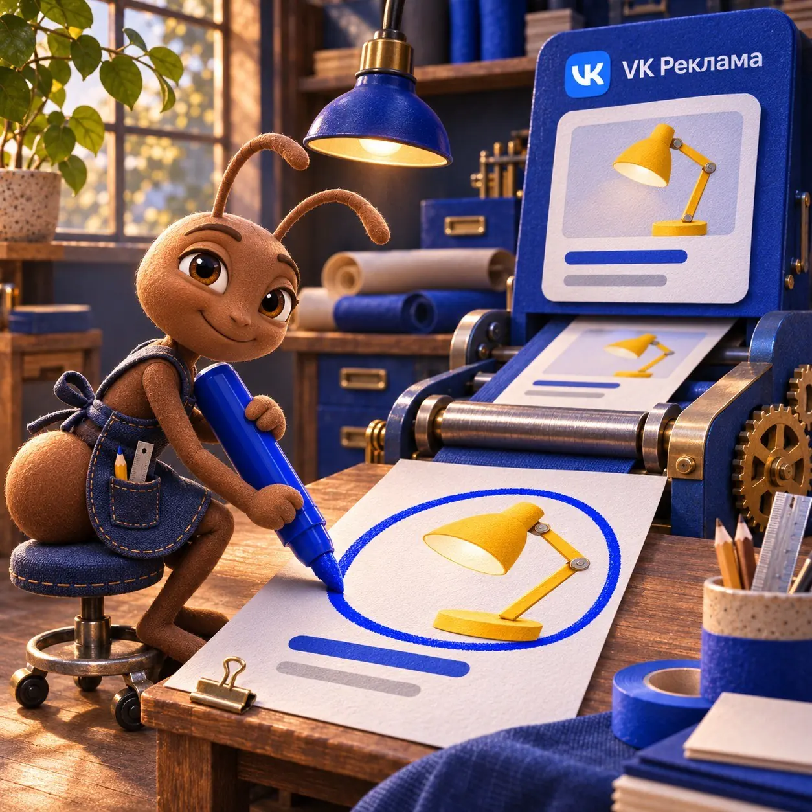
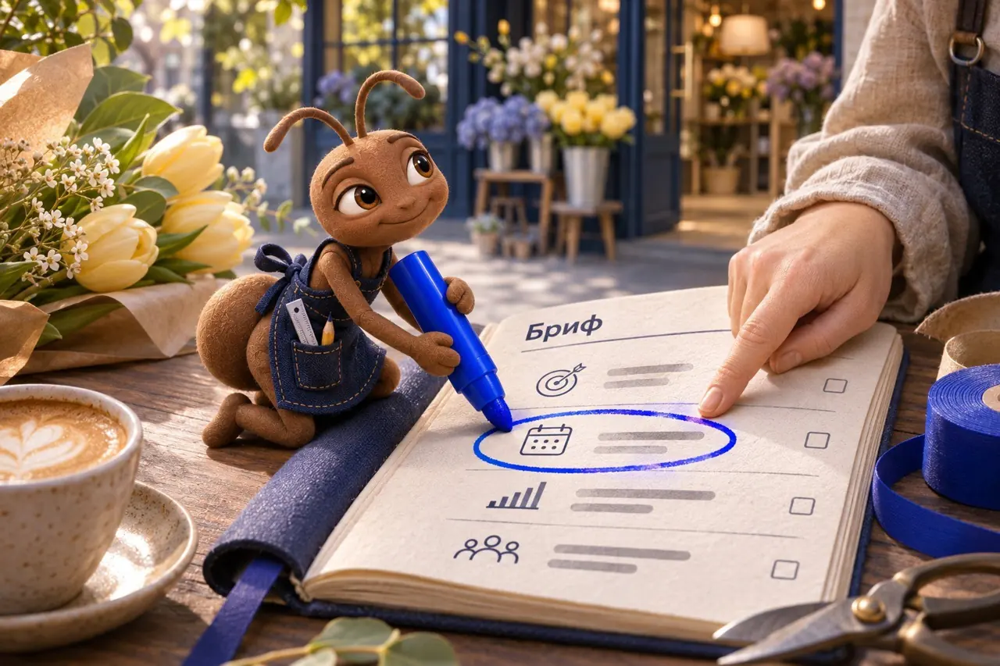
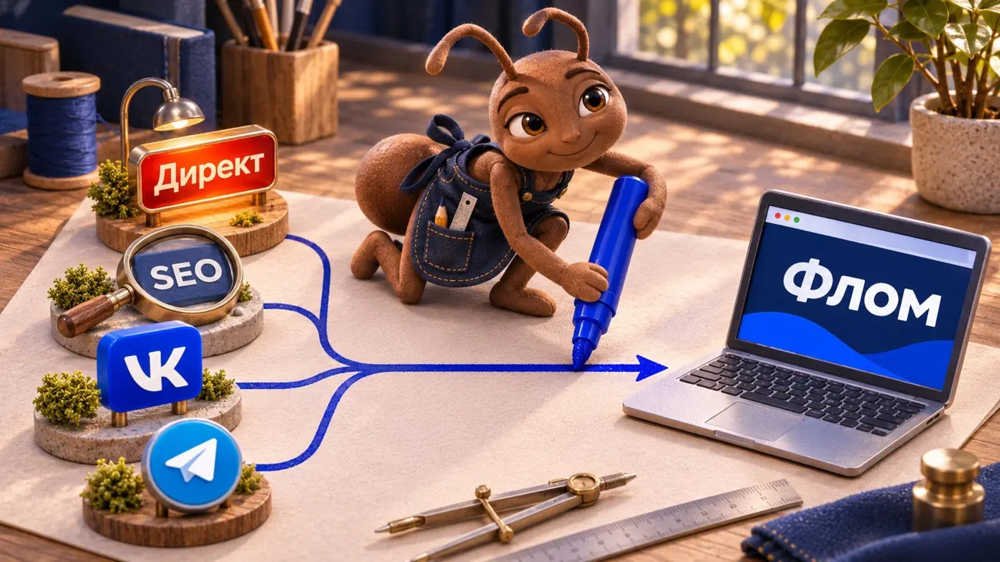
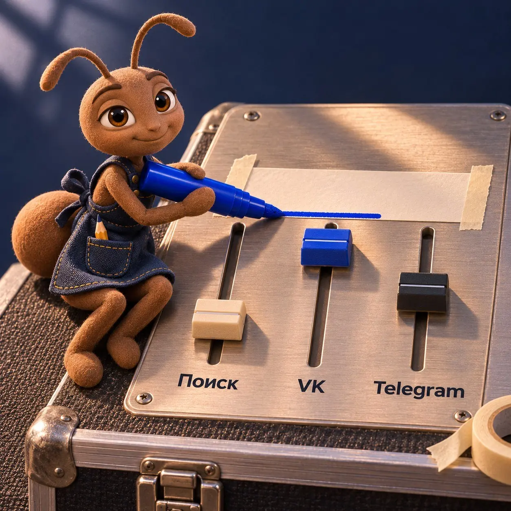

Реклама, в которой нет лишнего
Настраиваем и ведём рекламу в Яндекс Директ, VK Реклама, Telegram Ads и на Авито, делаем сайты и SEO. Лишнее вычёркивает Фломик, а наша команда следит, чтобы остались обращения.

Листайте: Фломик правит поисковую кампанию
- установка кондиционеров цена
- кондиционер бесплатно
- как установить кондиционер самому
- купить кондиционер с установкой
- кондиционер реферат
- монтаж сплит-системы под ключ
- работа монтажником кондиционеров
- обслуживание кондиционеров для офиса


- Вычёркиваем лишнееМинус-слова и запросы «бесплатно», «сам», «реферат», «работа»: за такие клики платить не нужно.
- Обводим тех, кто готов покупатьОставляем запросы людей, которые ищут услугу, и аудиторию, где живут ваши клиенты.
- Ведём на страницу, где просят заявкуОбъявление приводит не на главную, а туда, где понятно, что делать дальше.
- Смотрим цифры и правим дальшеЦели в Метрике показывают, какое объявление привело обращение. Остальное правим.
Что делаем и сколько это стоит
Цены указаны «от»: итог зависит от задачи. Называем его после короткого брифа, до начала работ.
-
основное направление
Яндекс Директ: настройка и ведение
Поиск и сети, минус-слова, цели в Яндекс Метрике, регулярные правки и понятные отчёты.
от 25 000 ₽ -

Аудит Директа
Разбираем рекламные кампании и Яндекс Метрику: где течёт бюджет и что исправить. Хорошая точка входа, если реклама уже идёт.
от 15 000 ₽за услугу -

VK Реклама: таргет
Настройка и ведение таргетированной рекламы во ВКонтакте: аудитории, креативы, проверка гипотез.
от 30 000 ₽ -
SEO-продвижение
Верстальщик не входит в стоимость: от 4 000 ₽ за страницу под ключ. Бюджет на ссылки и поведенческие факторы согласуется отдельно.
от 40 000 ₽ -
Сайты и интернет-магазины
Страница или магазин, которые ведут к заявке, а не просто выглядят красиво.
от 20 000 ₽ -

Услуги маркетолога
Консультация, маркетинговый план на месяц, стратегия бизнеса, запуск бренда под ключ.
от 65 000 ₽ -

Telegram Ads, MAX, Авито Ads
Запускаем и ведём рекламу и на этих площадках. Стоимость обсуждаем после брифа.
по запросу
Для кого: владельцы малого и среднего бизнеса, самозанятые и те, кто только запускает проектГде: по всей РоссииС кем: B2B, B2C, B2G
Что болит сейчас?
Выберите, что ближе всего
Подскажем, с какой услуги разумнее начать и сколько она стоит. Это ориентир, точную сумму назовём после брифа.
Тест: ловушки рекламы в Директе
Шесть вопросов про вашу рекламу. Фломик отметит, где могут утекать деньги, а гайд по этим ловушкам пришлём в Telegram.
Дорого? И какие гарантии?
«Дорого»
Сравнивать стоит не с ценой услуги, а с ценой заявки и клиента. Реклама без настройки платит за клики «бесплатно», «сам», «реферат» (см. лист выше), и такая экономия обычно выходит дороже.
Если сомневаетесь, начните с аудита от 15 000 ₽. Вы увидите, где в кампаниях и Метрике теряется бюджет, и сами решите, нужна ли вам наша работа дальше.
Рекламу можно вести и без нас: тогда аудит станет вашим планом правок.
«Какие гарантии?»
Число заявок мы не обещаем. Честно обещать его не может никто: результат зависит от спроса, конкурентов, цены и самого продукта.
Что можем гарантировать: объясняем каждое действие в кампании, показываем, что изменили и как это отразилось в цифрах, и сразу говорим, если реклама вам сейчас не подходит. Начало с аудита тоже снижает риск: вы платите за разбор, а не за обещания.
Дружная команда специалистов и один муравей с маркером
Фломик проверяет каждый лист: обводит то, что работает, вычёркивает лишнее и подчёркивает то, на что стоит потратить бюджет.
За ним наша команда специалистов: Директ, VK, Telegram и Авито, сайты и SEO, маркетолог. Мы погружаемся в продукт, аудиторию и цели, ищем точки роста и превращаем интерес к продукту в реальные обращения.



Расскажите про задачу
Напишите, что нужно: запуск, аудит, сайт или просто «нет заявок». Ответим и предложим, с чего начать.